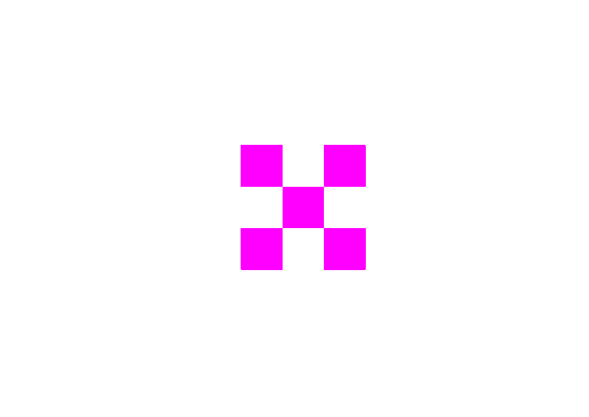

Étudiante en 2e année en DNMADE Graphisme et Image de Communication à Auguste Renoir (Paris), je m’intéresse à l’édition d’art, au cinéma documentaire et à la conception d’identités pour des institutions et lieux culturels. Je porte une attention toute particulière pour la plasticité et les techniques d’impression.
zelineherody@gmail.com
+33 7 48 11 69 01 